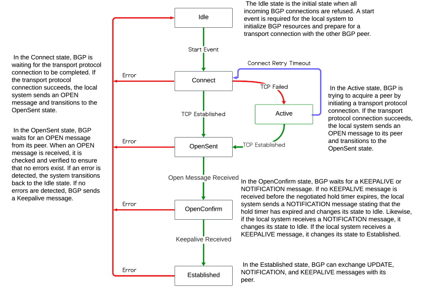

This article explains the BGP-FSM, the different states during the BGP neighbor negotiation and is based on Based on RFC 4271. Unlike IGP, BGP does not have its own transport protocol, the BGP peering sessions are manually defined and rely on TCP. TCP eliminates the need to implement explicit update fragmentation, retransmission, acknowledgement, and sequencing.
BGP listens on TCP port 179 and BGP MUST maintain a separate FSM for each configured peer.
Each BGP peer paired in a potential connection will attempt to connect to the other, unless configured to remain in the ‘idle’ state, or configured to remain passive. Active or connecting is the side of the TCP connection sending the first TCP SYN packet. Passive or listening side is the sender of the first SYN/ACK.
BGP Neighbor States Six states are involved in the BGP process three for TCP connectivity and three for BGP connectivity as defined by RFC 4271.
| TCP Connectivity | BGP Connectivity |
|---|---|
| Idle | OpenSent |
| Connect | OpenConfirm |
| Active | Established |

Idle State
In this state, BGP refuses all incoming connections for the local system and no resources are allocated. In response to a ManualStart ( manually configure BGP on the local system ) event or an AutomaticStart ( restart existing session) BGP:
- initializes all BGP resources for the peer connection,
- sets ConncectRetryCounter to zero,
- starts the ConnectRetryTimer with the initial value,
- initiates the TCP connection to the other peer,
- listens for a connection that may be initiated by the remote BGP peer and
- changes its state to Connect.
In case of errors, BGP falls back to the Idle state.
Connect State
BGP is waiting for the transport protocol connection to be completed.
If the TCP connection succeeds.
- stops the ConnectRetryTimer ( if running ) and sets the ConnectRetryTimer to zero,
- completes the BGP initialization
- sends an OPEN message to its peer,
- sets the HoldTimer to a large value ( the suggestion is 5min), and
- changes its state to OpenSent.
If the TCP connection fails
- restarts the ConnectRetryTimer,
- changes its state to Active.
If the ConnectRetry timer expires
- remains in the Connect state
- the timer is reset, and transport connection is initiated
In case of any other event the state goes back to Idle.
Active State
In this state, BGP is trying to acquire a peer by listening for, and accepting a TCP connection
If the TCP connection succeeds
- clears the BGP ConnectRetryTimer,
- sends an OPEN message to its peer,
- changes its state to OpenSent.
If the TCP connection fails
- resets the ConnectRetryTimer,
- changes its state to Idle.
If the ConnectRetry timer expires
- BGP restarts the ConnectRetry timer
- falls back to the Connect.
The state might go back to Idle in case of other events, such as a Stop event initiated by the system or the operator. If the state is oscillating between Connect and Active indicates that something is wrong with the TCP transport connection.
OpenSent
In this state, BGP waits for an OPEN message from its peer. Once received checks all fields for correctness.
The OPEN message contains:
- BGP version.
- The autonomous system (AS) number.
- The source IP address of the configured neighbor.
- Router-ID uniqueness.
- Security parameters ( TTL, password, etc)
- Capabilities.
If there are errors or capabilities mismatch in the OPEN message the local system:
- the system sends an error NOTIFICATION message
- goes back to Active.
If there is an error due to TCP event
- the state will change to Active
- will attempt to complete the three-way handshake.
If there are no errors in the OPEN message the local system:
- resets the DelayOpenTimer to zero,
- sets ConnectRetryTimer to zero,
- sends a KEEPALIVE message, and
- sets the HoldTimer per the negotiated value, and
- changes its state to OpenConfirm.
OpenConfirm
In this state, BGP waits for a KEEPALIVE or NOTIFICATION message.
If a NOTIFICATION message is received,
- falls back to the Idle state
In case of any transport disconnect notification or in response to any stop event
- the state falls back to Idle state
If the local system receives a KEPALIVE the local system:
- restarts the HoldTimer and
- changes its state to Established.
The system sends periodic KEEPALIVE messages at the rate set by the KEEPALIVE timer.
Established
In the Established state, BGP can exchange UPDATE, NOTIFICATION and KEEPALIVE messages with its peer.
If the HoldTimer expires before the local system receives a KEPALIVE, NOTIFICATION or an UPADTE message BGP will change its state to Idle.
The UPDATE messages are checked for errors or missing attributes such as missing attributes. If errors are found, a NOTIFICATION message is sent to the peer, and the state falls back to Idle.
If the Hold Timer expires, or a disconnect notification is received from the transport protocol, or a Stop event is received, or in response to any other event, the system falls back to the Idle state.